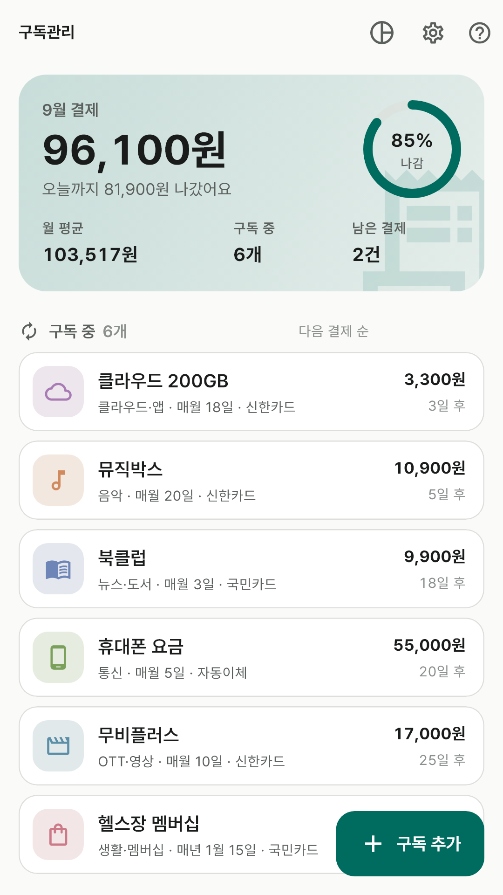
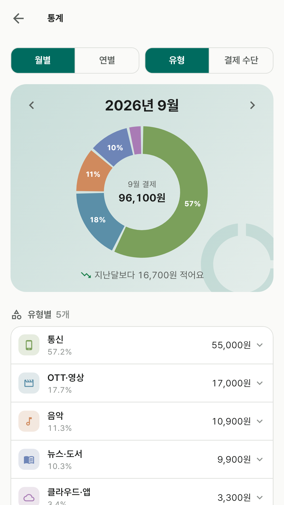
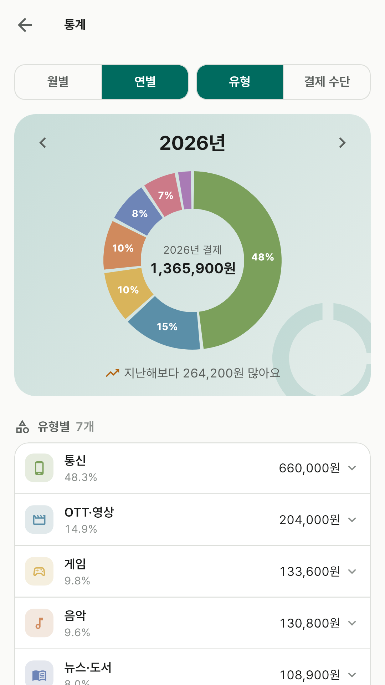
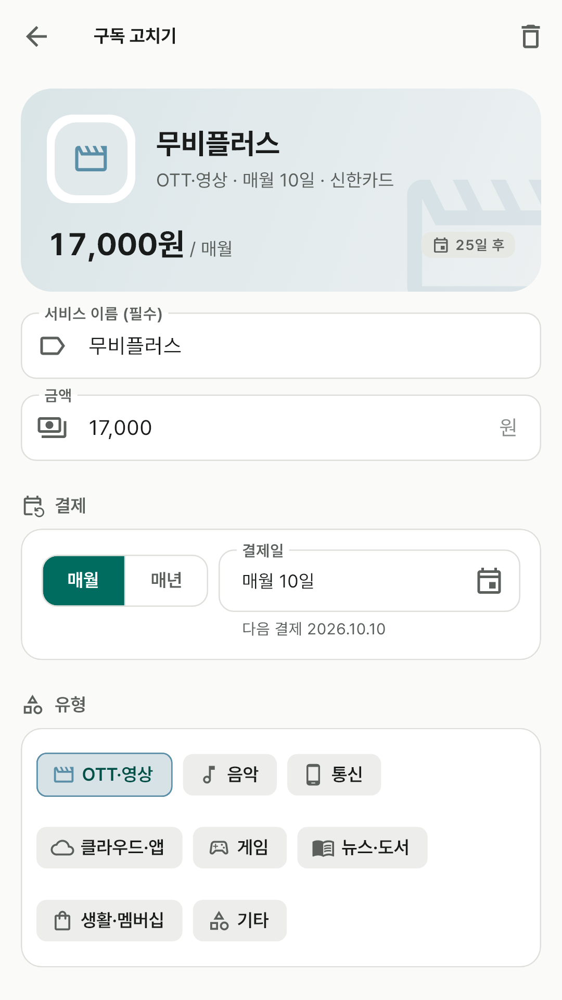
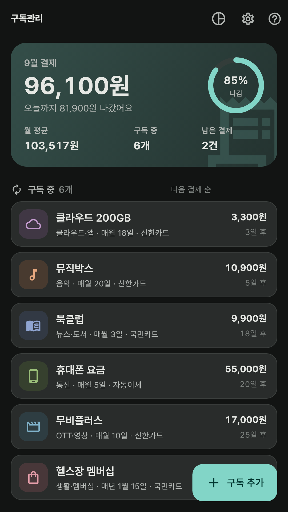

이번 달에 얼마가 나가나요
이번 달에 실제로 결제되는 금액을 맨 위 면에서 크게 확인하고, 오늘까지 얼마나 나갔는지는 고리로 봐요. 매년 내는 구독은 12로 나눠 월 평균에 담아, 한 달에 얼마를 쓰는지 고르게 보여줘요.
OTT와 음악, 통신 요금과 클라우드까지.
어디에 얼마를 내는지 적어 두고 다음 결제일을 챙겨요.
이번 달에 실제로 결제되는 금액을 맨 위 면에서 크게 확인하고, 오늘까지 얼마나 나갔는지는 고리로 봐요. 매년 내는 구독은 12로 나눠 월 평균에 담아, 한 달에 얼마를 쓰는지 고르게 보여줘요.
구독 카드는 다음에 결제될 날짜가 빠른 것부터 놓여요. "3일 후"처럼 남은 날짜를 적어 두고 오늘 결제되는 것은 색으로 강조해, 무엇이 곧 빠져나갈지 바로 알 수 있어요.
유형별 비중을 도넛으로, 열두 달 흐름을 막대로 봐요. 지난달보다 얼마나 늘고 줄었는지도 한 줄로 알려줘요. 월별과 연별을 바꿔 보고, 유형 대신 결제 수단으로 묶어 어느 카드에서 나가는지도 확인해요.
결제 수단은 "신한카드"처럼 직접 붙이는 이름일 뿐이에요. 카드 번호도, 계좌 번호도, 비밀번호도 묻지 않고 저장하지 않아요.





화면의 구독은 기능을 설명하기 위한 예시예요. 앱에는 샘플 데이터가 들어 있지 않아요.
구독 기록을 개발자 서버로 보내지 않아요. 앱 전용 기기 저장소에만 담고, 네트워크 권한을 요청하지 않아 인터넷이 없어도 전부 동작해요.
Android 자동 백업이 켜져 있어 사용자 본인의 Google 계정 백업에 포함될 수 있어요. 앱 제거 또는 데이터 삭제 시 기록도 사라질 수 있어요.